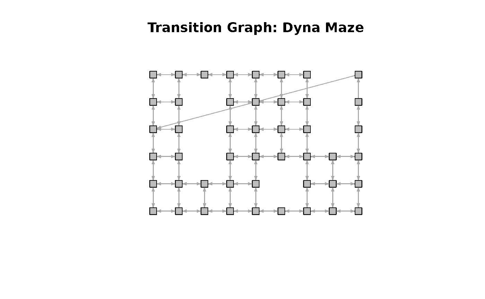
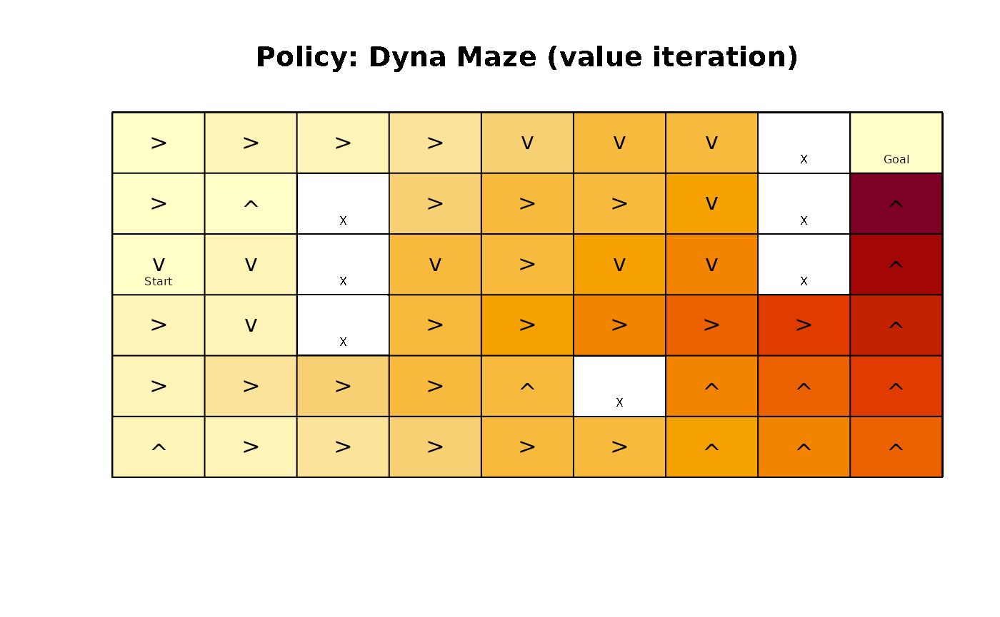
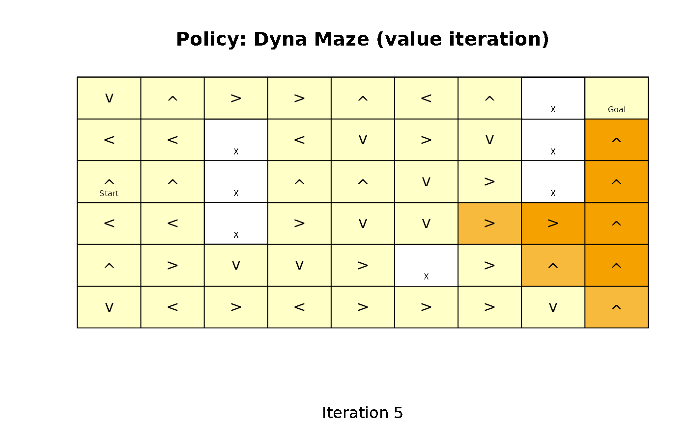
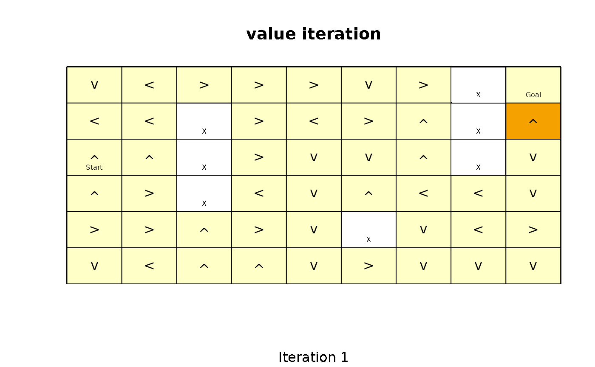
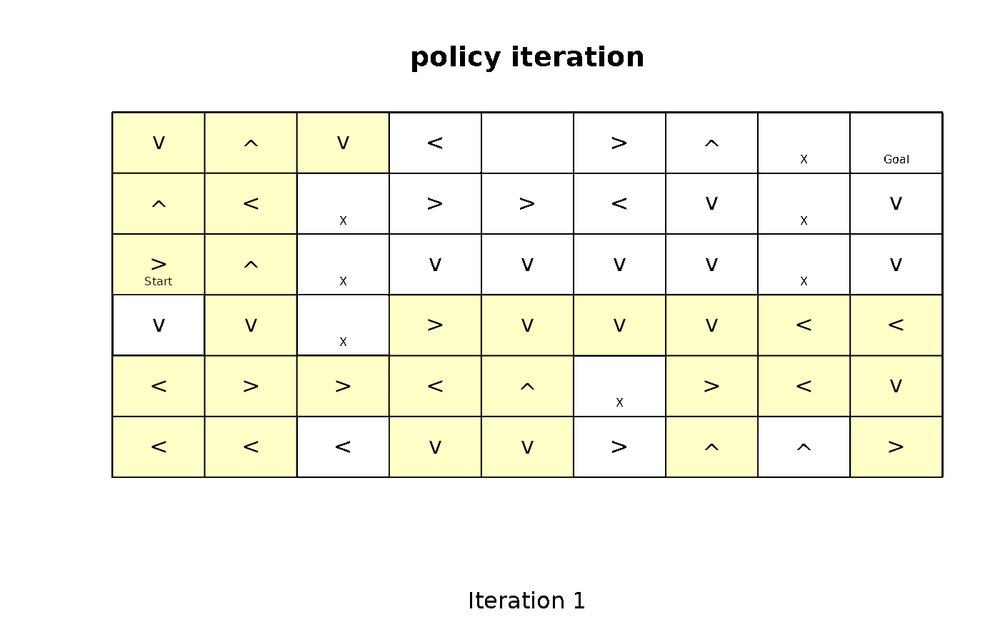
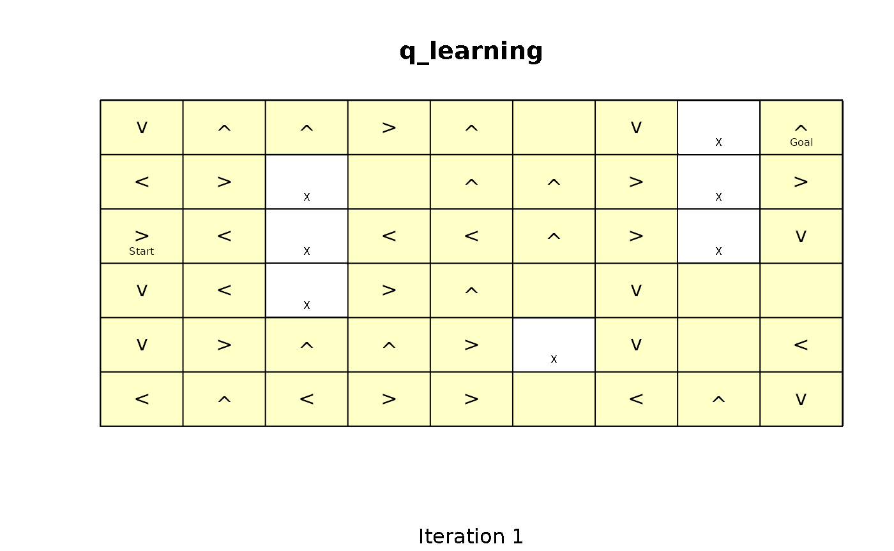
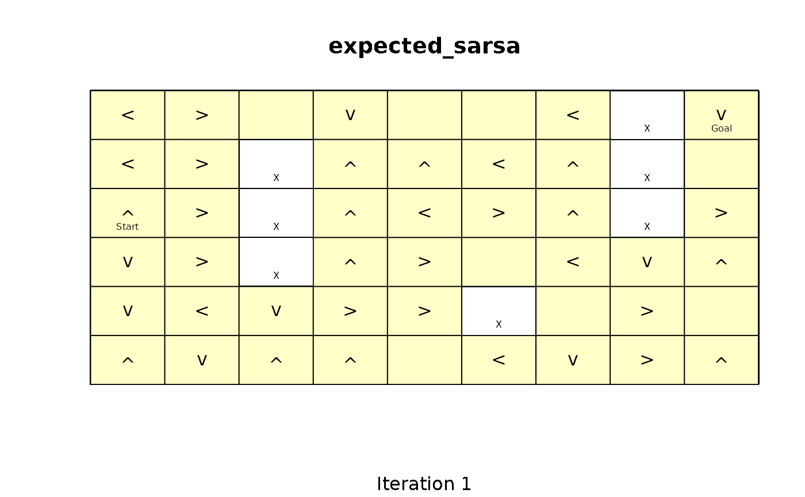

Introduction
Gridworlds represent an easy to explore how Markov Decision Problems
(MDPs), Partially Observable Decision Problems (POMDPs), and various
approaches to solve these problems work. The R package
pomdp (Hahsler and Cassandra
2025),(Hahsler 2025) provides a set
of helper functions starting with the prefix gridworld_ to
make defining and experimenting with gridworlds easy.
Defining a Gridworld
Many gridworlds represent mazes with start and goal states that the agent needs to solve. Mazes can be easily defined. Here we create the Dyna Maze from Chapter 8 in (Sutton and Barto 2018).
x <- gridworld_maze_MDP(
dim = c(6,9),
start = "s(3,1)",
goal = "s(1,9)",
walls = c("s(2,3)", "s(3,3)", "s(4,3)",
"s(5,6)",
"s(1,8)", "s(2,8)", "s(3,8)"),
goal_reward = 1,
step_cost = 0,
restart = TRUE,
discount = 0.95,
name = "Dyna Maze",
)
x
#> MDP, list - Dyna Maze
#> Discount factor: 0.95
#> Horizon: Inf epochs
#> Size: 47 states / 5 actions
#> Start: s(3,1)
#>
#> List components: 'name', 'discount', 'horizon', 'states', 'actions',
#> 'transition_prob', 'reward', 'info', 'start'Gridworlds are implemented with state names
"s(<row>,<col>)", where row and
col are locations in the matrix representing the gridworld.
The actions are "up", "right",
"down", and "left". Conversion between state
labels and the position in the matrix (row and column index) can be done
with gridworld_s2rc() and gridworld_rc2s(),
respectively.
The transition graph can be visualized. Note, the transition from the state below the goal state back to the start state shows that the maze restarts the agent once it reaches the goal and collects the goal reward.

A more general way to create gridworlds is implemented in the
function gridworld_init() which initializes a new gridworld
creating a matrix of states with given dimensions. Unreachable states
and absorbing states can be defined. The returned information can be
used to build a custom gridworld MDP.
Working with Gridworld MDPs
The gridworld can be accessed as a matrix.
gridworld_matrix(x)
#> [,1] [,2] [,3] [,4] [,5] [,6] [,7] [,8]
#> [1,] "s(1,1)" "s(1,2)" "s(1,3)" "s(1,4)" "s(1,5)" "s(1,6)" "s(1,7)" NA
#> [2,] "s(2,1)" "s(2,2)" NA "s(2,4)" "s(2,5)" "s(2,6)" "s(2,7)" NA
#> [3,] "s(3,1)" "s(3,2)" NA "s(3,4)" "s(3,5)" "s(3,6)" "s(3,7)" NA
#> [4,] "s(4,1)" "s(4,2)" NA "s(4,4)" "s(4,5)" "s(4,6)" "s(4,7)" "s(4,8)"
#> [5,] "s(5,1)" "s(5,2)" "s(5,3)" "s(5,4)" "s(5,5)" NA "s(5,7)" "s(5,8)"
#> [6,] "s(6,1)" "s(6,2)" "s(6,3)" "s(6,4)" "s(6,5)" "s(6,6)" "s(6,7)" "s(6,8)"
#> [,9]
#> [1,] "s(1,9)"
#> [2,] "s(2,9)"
#> [3,] "s(3,9)"
#> [4,] "s(4,9)"
#> [5,] "s(5,9)"
#> [6,] "s(6,9)"
gridworld_matrix(x, what = "labels")
#> [,1] [,2] [,3] [,4] [,5] [,6] [,7] [,8] [,9]
#> [1,] "" "" "" "" "" "" "" "X" "Goal"
#> [2,] "" "" "X" "" "" "" "" "X" ""
#> [3,] "Start" "" "X" "" "" "" "" "X" ""
#> [4,] "" "" "X" "" "" "" "" "" ""
#> [5,] "" "" "" "" "" "X" "" "" ""
#> [6,] "" "" "" "" "" "" "" "" ""
gridworld_matrix(x, what = "reachable")
#> [,1] [,2] [,3] [,4] [,5] [,6] [,7] [,8] [,9]
#> [1,] TRUE TRUE TRUE TRUE TRUE TRUE TRUE FALSE TRUE
#> [2,] TRUE TRUE FALSE TRUE TRUE TRUE TRUE FALSE TRUE
#> [3,] TRUE TRUE FALSE TRUE TRUE TRUE TRUE FALSE TRUE
#> [4,] TRUE TRUE FALSE TRUE TRUE TRUE TRUE TRUE TRUE
#> [5,] TRUE TRUE TRUE TRUE TRUE FALSE TRUE TRUE TRUE
#> [6,] TRUE TRUE TRUE TRUE TRUE TRUE TRUE TRUE TRUEOther options for what are "values" (for
state values) and "action", but these are only available
for solved problems that contain a policy.
Solving a Gridworld
Gridworld MDPs are solved like any other MDP.
sol <- solve_MDP(x, method = "value_iteration")
sol
#> MDP, list - Dyna Maze
#> Discount factor: 0.95
#> Horizon: Inf epochs
#> Size: 47 states / 5 actions
#> Start: s(3,1)
#> Solved:
#> Method: 'value iteration'
#> Solution converged: TRUE
#>
#> List components: 'name', 'discount', 'horizon', 'states', 'actions',
#> 'transition_prob', 'reward', 'info', 'start', 'solution'Detailed information about the solution can be accessed.
sol$solution
#> $method
#> [1] "value iteration"
#>
#> $policy
#> $policy[[1]]
#> state U action
#> 1 s(1,1) 0.9560273 right
#> 2 s(2,1) 0.9077464 right
#> 3 s(3,1) 0.9560273 down
#> 4 s(4,1) 1.0063445 right
#> 5 s(5,1) 1.0593100 right
#> 6 s(6,1) 1.0063445 up
#> 7 s(1,2) 1.0063445 right
#> 8 s(2,2) 0.9560273 up
#> 9 s(3,2) 1.0063445 down
#> 10 s(4,2) 1.0593100 down
#> 11 s(5,2) 1.1150632 right
#> 12 s(6,2) 1.0593100 right
#> 13 s(1,3) 1.0593100 right
#> 14 s(5,3) 1.1737507 right
#> 15 s(6,3) 1.1150632 right
#> 16 s(1,4) 1.1150632 right
#> 17 s(2,4) 1.1737507 right
#> 18 s(3,4) 1.2355271 down
#> 19 s(4,4) 1.3005548 right
#> 20 s(5,4) 1.2355271 right
#> 21 s(6,4) 1.1737507 right
#> 22 s(1,5) 1.1737507 down
#> 23 s(2,5) 1.2355271 right
#> 24 s(3,5) 1.3005548 right
#> 25 s(4,5) 1.3690050 right
#> 26 s(5,5) 1.3005548 up
#> 27 s(6,5) 1.2355271 right
#> 28 s(1,6) 1.2355271 down
#> 29 s(2,6) 1.3005548 right
#> 30 s(3,6) 1.3690050 down
#> 31 s(4,6) 1.4410579 right
#> 32 s(6,6) 1.3005548 right
#> 33 s(1,7) 1.3005548 down
#> 34 s(2,7) 1.3690050 down
#> 35 s(3,7) 1.4410579 down
#> 36 s(4,7) 1.5169031 right
#> 37 s(5,7) 1.4410579 up
#> 38 s(6,7) 1.3690050 up
#> 39 s(4,8) 1.5967401 right
#> 40 s(5,8) 1.5169031 up
#> 41 s(6,8) 1.4410579 up
#> 42 s(1,9) 0.9077464 restart
#> 43 s(2,9) 1.8623591 up
#> 44 s(3,9) 1.7692411 up
#> 45 s(4,9) 1.6807791 up
#> 46 s(5,9) 1.5967401 up
#> 47 s(6,9) 1.5169031 up
#>
#>
#> $converged
#> [1] TRUE
#>
#> $delta
#> [1] 0.0005047701
#>
#> $iterations
#> [1] 149Now the policy and the state values are available as a matrix.
gridworld_matrix(sol, what = "values")
#> [,1] [,2] [,3] [,4] [,5] [,6] [,7] [,8]
#> [1,] 0.9560273 1.0063445 1.059310 1.115063 1.173751 1.235527 1.300555 NA
#> [2,] 0.9077464 0.9560273 NA 1.173751 1.235527 1.300555 1.369005 NA
#> [3,] 0.9560273 1.0063445 NA 1.235527 1.300555 1.369005 1.441058 NA
#> [4,] 1.0063445 1.0593100 NA 1.300555 1.369005 1.441058 1.516903 1.596740
#> [5,] 1.0593100 1.1150632 1.173751 1.235527 1.300555 NA 1.441058 1.516903
#> [6,] 1.0063445 1.0593100 1.115063 1.173751 1.235527 1.300555 1.369005 1.441058
#> [,9]
#> [1,] 0.9077464
#> [2,] 1.8623591
#> [3,] 1.7692411
#> [4,] 1.6807791
#> [5,] 1.5967401
#> [6,] 1.5169031
gridworld_matrix(sol, what = "actions")
#> [,1] [,2] [,3] [,4] [,5] [,6] [,7] [,8] [,9]
#> [1,] "right" "right" "right" "right" "down" "down" "down" NA "restart"
#> [2,] "right" "up" NA "right" "right" "right" "down" NA "up"
#> [3,] "down" "down" NA "down" "right" "down" "down" NA "up"
#> [4,] "right" "down" NA "right" "right" "right" "right" "right" "up"
#> [5,] "right" "right" "right" "right" "up" NA "up" "up" "up"
#> [6,] "up" "right" "right" "right" "right" "right" "up" "up" "up"A visual presentation with the state value represented by color (darker is larger), the policy represented by action arrows, and the labels added is also available.

We see that value iteration found a clear path from the start state towards the goal state following increasing state values.
Experimenting with Solvers
It is interesting to look how different solvers find a solution. We can visualize how the policy and state values change after each iteration. For example, we can stop the algorithm after a given number of iterations and visualize the progress.
sol <- solve_MDP(x, method = "value_iteration", N = 5)
#> Warning in MDP_value_iteration_inf_horizon(model, error, N_max, U = U, verbose
#> = verbose): MDP solver did not converge after 5 iterations (delta =
#> 0.81450625). Consider decreasing the 'discount' factor or increasing 'error' or
#> 'N_max'.
gridworld_plot_policy(sol, zlim = c(0, 2), sub = "Iteration 5")
The solver creates a warning indicating that the solution has not converged after only 5 iterations. In the visualization, we see that value iteration has expanded values from the goal state up to 5 squares away. To make this analysis easier, we can usegridworld_animate() to draw a visualization after each
iteration.
gridworld_animate(x, "value_iteration", n = 5, zlim = c(0, 2))
Whengifski is installed, R Markdown combines the
individual frames into an animation. Otherwise, the vignette displays
the final frame as a static plot.
gridworld_animate(x, "value_iteration", n = 20, zlim = c(0, 2))It is easy to see how value iteration propagates value from the goal to the start. In the following, we create animations for more solving methods.
gridworld_animate(x, "policy_iteration", n = 20, zlim = c(0, 2))
gridworld_animate(x, "q_learning", n = 20, zlim = c(0, 2), horizon = 100)
gridworld_animate(x, "sarsa", n = 20, zlim = c(0, 2), horizon = 100)
gridworld_animate(x, "expected_sarsa", n = 20, zlim = c(0, 2), horizon = 100, alpha = 1)